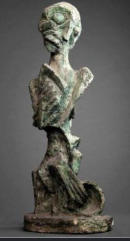
✧Descripition✧
The poet- Rabindrnath Tagore (1938)
This is Ramkinkar Baij's most radical work, known as 'The Poet'. Made in cement and concrete, it is considered India's first abstract sculpture. The face of Tagore is broken into cubist planes with distorted eyes, nose and ears. Influenced by Picasso and Brancusi, Baij did not show Tagore as a god-like figure but as a thinking, troubled human. The surface is rough, like the red soil of Santiniketan, with finger marks visible. It has no polish or pedestal. It changed the definition of beauty in Indian sculpture and marks the beginning of modernism in Indian art.
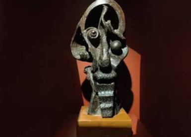
✧Descripition✧
Modern Head Study, 1935-40
This is an experimental mask-like bust created by Baij in his open-air studio in Santiniketan. It shows a strange face with bulging eyes and an open mouth. It is not a portrait of a person but a portrait of an emotion - anxiety and shock. Baij believed art is not imitation but expression. He kneaded cheap cement with his own hands, so fingerprints are still visible. He made such works outdoors among students to take art out of museums. It is a perfect fusion of folk sensibility and Western modernism, showing his non-academic approach.
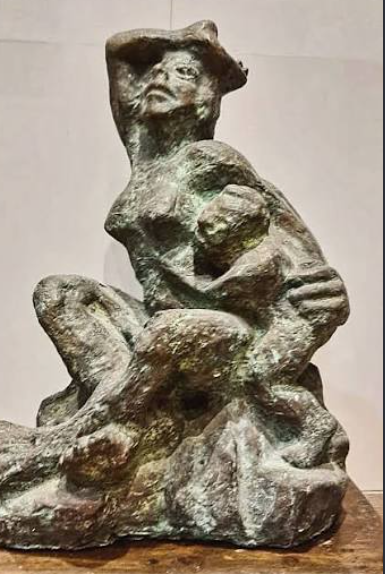
✧Descripition✧
Santhal Mother and Child, 1936
The real name of this sculpture is 'Sujata', modeled on Jaya Appasamy, a student of Kala Bhavana. It shows a young mother seated with a child in her lap. Made of cement and laterite mortar, it represents Baij's deep love for the Santhal community. The woman's body is shown as strong, heavy and rooted to the earth, not fragile. The child merges into the mother's body. Its rough, unfinished texture and earthy finish are Baij's signature. It celebrates the dignity of a tribal mother, making a common woman a subject of monumental art for the first time.
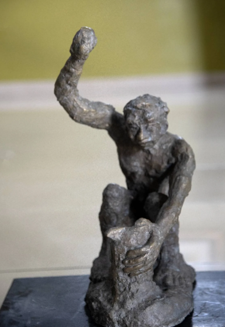
✧Descripition✧
Study of a Worker, 1956
This is a study for his famous monumental sculpture 'Mill Call' (1956) in Santiniketan. Mill Call shows a group of labourers rushing towards the factory after hearing the siren. This single figure with a raised hand is calling others. The 12-foot high original depicts the new hero of independent India - the industrial worker. The body is thin, elongated and full of movement. Like Rodin, Baij captures sound and movement in solid cement. It shows the transition of India from agriculture to industry and the struggle of farmers who became mill workers after independence.
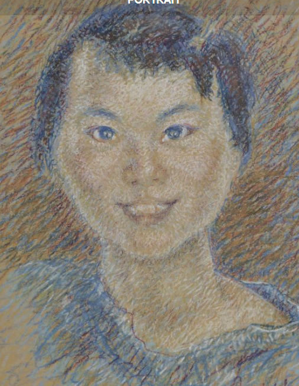
✧Descripition✧
Portrait of a Girl
This is a photograph of a painting whose bust was also sculpted by Baij. The model was Binodini Devi from a royal family of Manipur who came to study art in Santiniketan. Baij was fascinated by her beauty and inner conflict and made more than 20 works on her. This portrait shows a soft, smiling but thoughtful girl caught in a dilemma. He painted it on cheap gunny cloth with thick layers of oil paint to create a tactile, three-dimensional volume. It is not just a likeness but a psychological portrait of a young woman
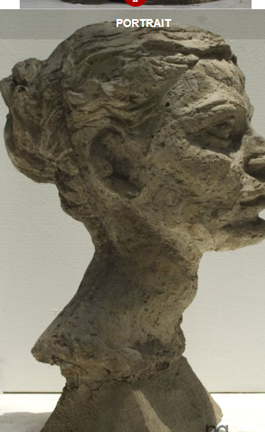
✧Descripition✧
Profile Study
this a cement bust of a woman seen in side profile with hair tied in a bun and a long neck. Baij never made commissioned portraits. He said, "I sculpt only those in whom I see some inner truth." This earthy, unpolished finish with deep-set eyes represents common women around Santiniketan. There is no ornament or decoration, only truth. It is a perfect example of his Contextual Modernism where Western technique meets Indian rural emotion. The work shows his humanist philosophy where every face has a story worth telling
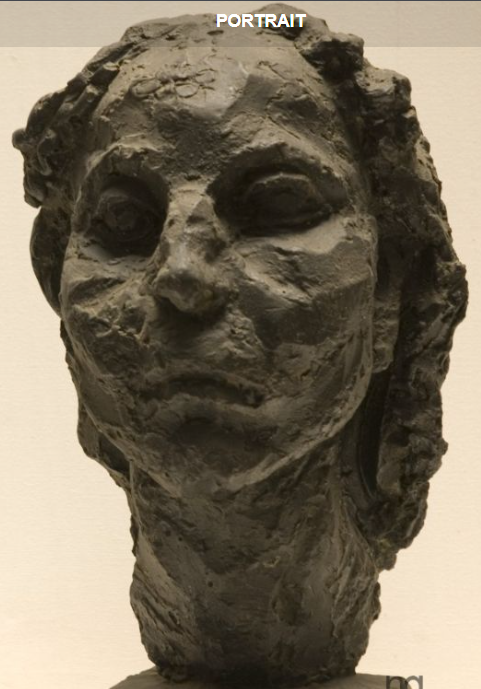
✧Descripition✧
santhal girl
This is a frontal bust of a Santhal adolescent girl with a round face, small eyes and curly hair. Coming from a poor family in Bankura, Baij found his own family among the Santhals. This bust is hand-modeled in cement, so finger impressions are clearly visible. He never used expensive marble or bronze, always inventing his own technique of concrete casting. It does not show poverty but pride and earthy beauty. Today it is preserved in NGMA, Delhi. It shows how Baij made tribal people the centre of modern Indian art.
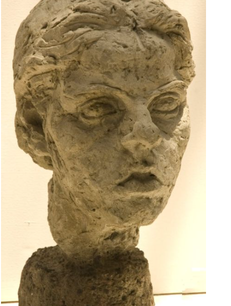
✧Descripition✧
(Sujata Study 2)
This is the second head study of the Sujata series in light-yellow cement. The eyes are half-open, lips closed with quiet sadness. Baij made it very quickly without any finishing, as he believed art must be captured instantly. The surface is left unfinished with the 'non-finito' technique inspired by Auguste Rodin, so it looks like wet clay. The light and shadow play on its rough surface gives it life. A portrait of an ordinary student became immortal and is now considered a milestone in Indian art history for its tenderness.
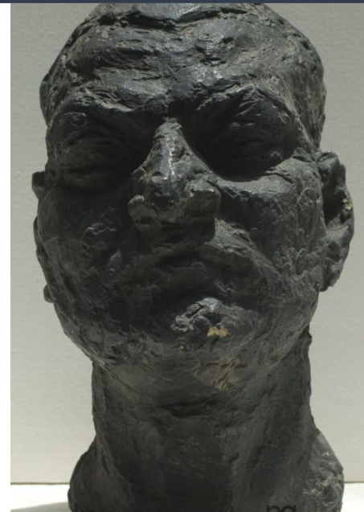
✧Descripition✧
(Realistic Bust), 1940
This realistic bust was made in 1940 during the last year of Tagore's life when he was very ill. It is dark brown-black with a very rough texture. The face shows wrinkles, sunken eyes and deep pain. World War II was going on and Tagore was deeply disturbed, which is reflected in this bust. Baij made it without hands, focusing only on the face. Its bronze version is also installed on the bank of Lake Balaton in Hungary. It is not a portrait of a poet-god but of a tired, human being facing death.
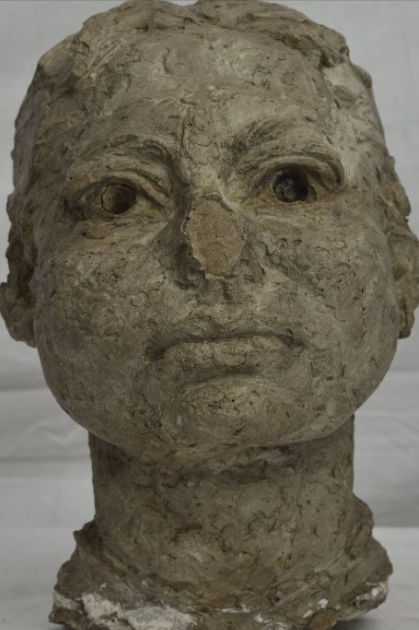
✧Descripition✧
Bust of Binodini
This is another female bust, either of Binodini or a Santhal woman, in cement with an earthy color. In Baij's art, woman is always a symbol of strength, not an object of pleasure. Whether Yakshi or Santhal woman, all have pride and strength. The specialty of this bust is its simplicity - no jewelry, no decoration, just a true face. Baij made more than 100 such head studies which are now preserved in Kala Bhavan museum, Santiniketan. They prove his belief that art should be accessible and human.
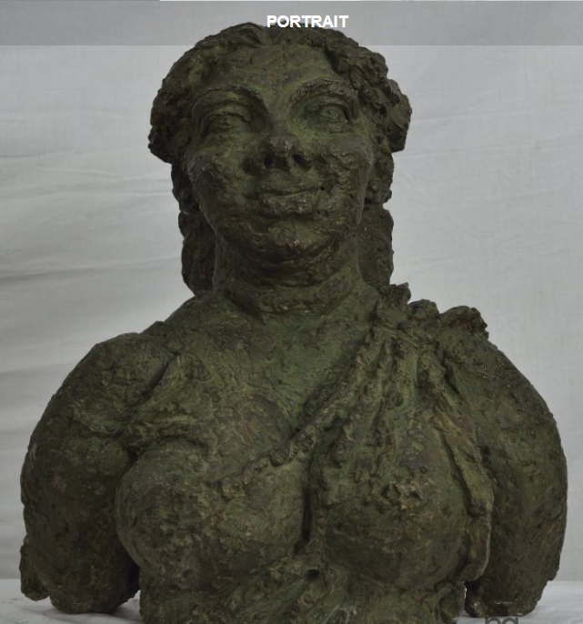
✧Descripition✧
Bust of Binodini
This is a semi-nude bust of a Santhal woman with prominent breasts. It does not signify vulgarity but fertility and nourishment, like ancient Yakshi sculptures of India. Made of cement mixed with village soil, it has developed a greenish moss because it was kept outdoors. It shows Baij's thought that the real beauty of India lies in the hardworking woman of the village, not in the queen of a palace. It is also very important from a feminist point of view. It celebrates motherhood and labour as divine.
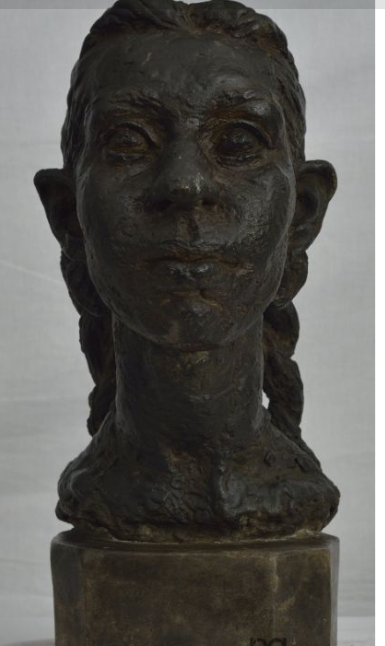
✧Descripition✧
(Bust on Pedestal), 1936
This famous bust of a girl with two braids on a square pedestal is also a portrait of Jaya Appasamy as Sujata. The details of braids, parting and softness of the face are beautifully shown in cement that looks like clay. Baij first made a clay model then cast cement over it. The eyes are slightly slanted and lips slightly open. Today it is counted among Ramkinkar's most tender and beautiful portraits showing the painter inside the sculptor. It shows how a simple hairstyle can become a work of art through honest observation.
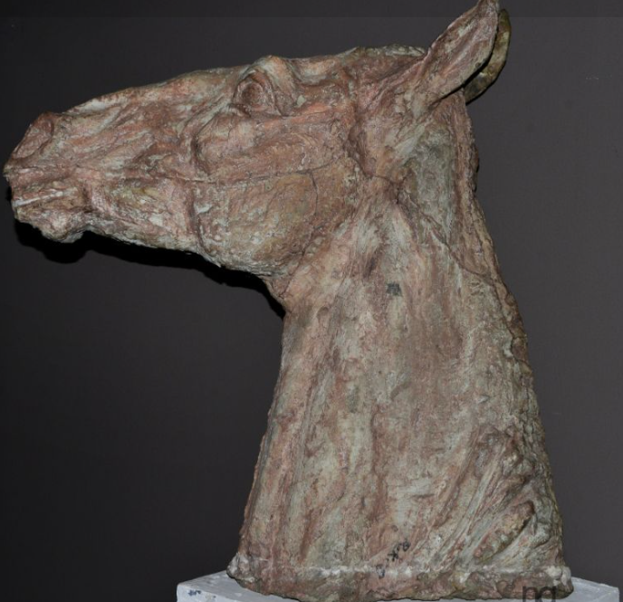
✧Descripition✧
This is a study of a horse's head. Baij also made many sculptures of animals. This cement head is rough, unfinished with an open mouth as if the horse is neighing. It tries to capture the power, speed and life of the animal. Baij always said Santhals are incomplete without their animals, so in his art dogs and horses always stay with humans. This small study was useful for his bigger sculptures like 'Santhal Family' and 'Mill Call' where a dog accompanies the family. It shows his love for all living beings.
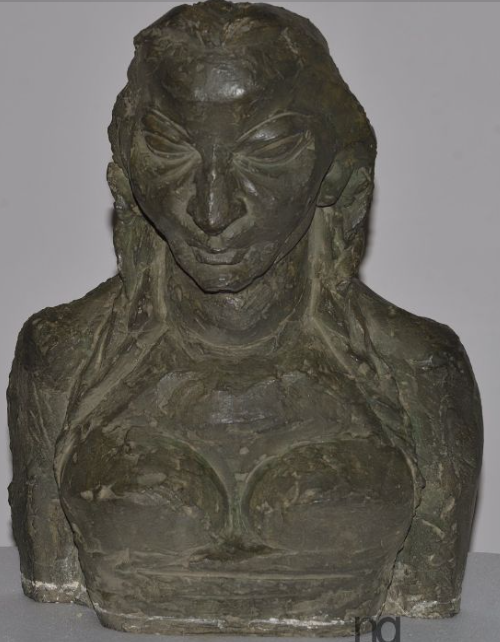
✧Descripition✧
Reserve Bank of India, New Delhi, 1958-59
This is one of India's most famous modern monumental sculptures installed at the main gate of RBI, New Delhi. It is 11 feet high and was made by Baij in 1958-59. Inspired by the ancient Besnagar Yakshini, it holds a flower and a bunch of paddy symbolizing agriculture and tradition. Its pair Yaksha holds a bag of money and a cogwheel symbolizing industry. Baij worked on it for 9 years. Made of cement and sand, it shows the confluence of ancient and modern India, protecting the nation's wealth symbolically.
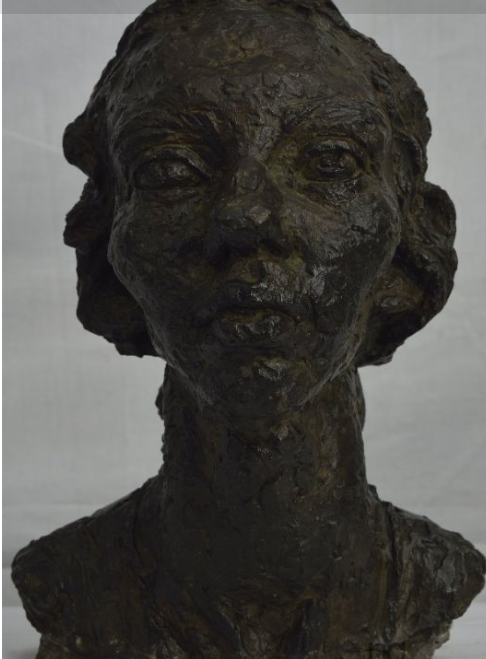
✧Descripition✧
Portrait of a Man
This is a serious male bust with a deep black patina. It may be a study of Gandhi, Nehru or a contemporary thinker. Baij never showed leaders as great heroes but as common thinking humans. The face is sunk in darkness with deep-set eyes. This black finish was done chemically to look like bronze. It does not show the arrogance of power but the burden of responsibility. It is the best example of his belief that 'Portrait does not flatter, it reveals'. It captures intellect rather than power.
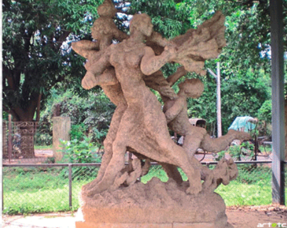
✧Descripition✧
(1938) - India's First Modern Public Sculpture
This is Baij's most famous and India's first modern public sculpture installed outdoors in Santiniketan. It shows a Santhal father carrying luggage on his shoulder, mother with a basket on her head, a child hanging in a basket and a dog accompanying them, all migrating. It depicts the migration after the famine of Bankura in 1938. Made of cement, laterite and pebbles with no pedestal, it appears to be walking on the ground. It is considered the beginning of modern public art in India, showing pride even in suffering.
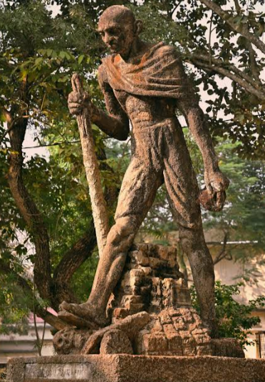
✧Descripition✧
Dandi March, 1948-49
This is a 7-foot high walking statue of Mahatma Gandhi with a stick during the Dandi March. Baij made it after Gandhi's assassination in 1948-49. Gandhi's body is shown taller and thinner than real. Baij said, "This is not the statue of outer Gandhi, but the Gandhi inside my mind." The face is determined, eyes looking forward. There is no glitter, only simplicity of khadi and cement like Gandhi's thoughts. It is considered the most sacred sculpture of Santiniketan, showing movement and moral strength rather than physical likeness.
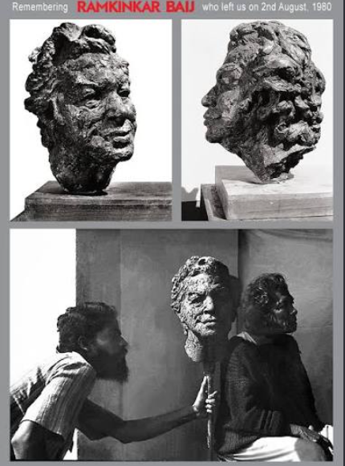
✧Descripition✧
(Self Sculpture)
This is the self-portrait sculpture of Ramkinkar Baij himself, not Tagore. In the collage, the two busts on top are his own face in two different styles - one cubist and one realistic - and the bottom photo shows Baij working with his own hands. Baij often made self-portraits to experiment with form. In this, he shows himself as a rugged, hardworking artist with deep-set eyes, rough hair and a determined face. It is made in cement with a very rough, unfinished texture showing his own struggle and honesty. Unlike other artists who glorify themselves, Baij shows himself as a common labourer of art, wearing a simple dhoti, with clay on his hands. It is a powerful symbol of an artist who lived like his Santhal subjects.
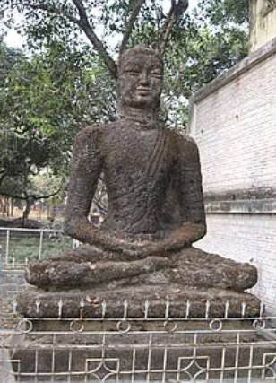
✧Descripition✧
Meditative Figure
This is a Buddha or a saint sitting in meditation mudra installed in a corner of Santiniketan. Baij did not make Buddha as a god but as a tired, peaceful human sitting. Hands in lap, eyes closed and peace on face. Its seat is made of stone pieces and plants have grown over it, making it part of nature. It is one of his later works when he was searching for religion and peace. There is no shine, only the fragrance of soil. It shows spirituality through simplicity.
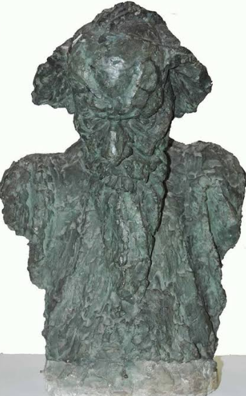
✧Descripition✧
Final Portrait Study
This is a final female bust which seems to be from the last decade of Baij's life. The face is slightly worn, eyes in deep sockets and lips closed. It shows the burden of age and experience. Baij always made his models from common women around him - maids, students, never a glamorous beauty. The specialty of this bust is its honesty - no false beauty makeup. The cement colour has turned black with time making it more alive. It is the final proof of his humanist approach where ordinary becomes eternal.